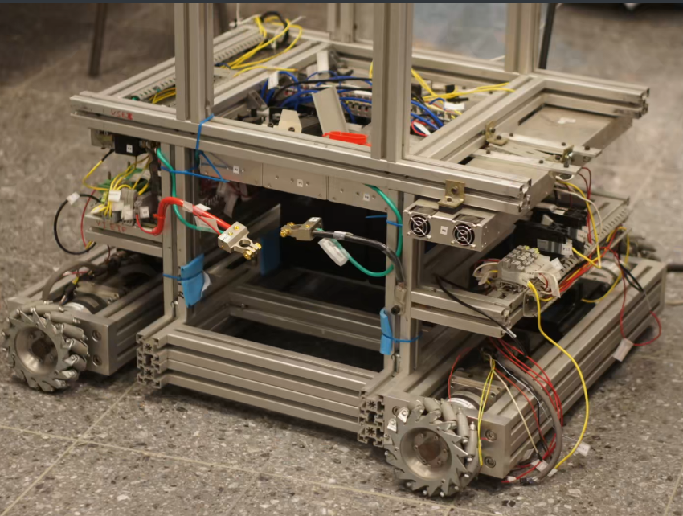

<style> .reveal section img { background:none; border:none; box-shadow:none; } #left { margin: 10px 0 15px 20px; text-align: center; float: left; z-index:-10; width:48%; font-size: 0.85em; line-height: 1.5; } #right { margin: 10px 0 15px 0; float: right; text-align: center; z-index:-10; width:48%; font-size: 0.85em; line-height: 1.5; } </style> ### COGNITIVE CAPABILITY MAPPING METHOD: A TOOL FOR GENERATING MULTI-END EFFECTOR MANIPULATION-RELATED PLACES FOR A PARTICULAR ROBOT IN A PARTICULA SCENARIO <br /> <span style="font-size: 25.0pt; "> **Master's Degree Thesis Proposal** </span> <span style="font-size: 16.0pt;"> **Student:** Ing. Israel Chaves Arbaiza, B99336 </span> <br /> [//]: # ( <img width="950" height="110" src="images/all_logos.png">) --- ## ARCOS-Lab's Humanoid Robot <span style="font-size: 22.0pt; "> <img width="900" height="550" src="media/real_humanoid_collage.jpg"> </span> --- ## Scenarios <span style="font-size: 22.0pt; "> <br /> <br /> <img width="900" height="260" src="media/scenarios.png"> </span> --- ## Omnidirectional Mobile Platform <span style="font-size: 20.0pt; "> * *Mecanum* wheels * Contains the electrical power control for the robot * Rotational joint at the back * Our own designed PCB's, OpenCoRoCo, to power control  <img align="right" width="450" height="400" src="media/arcosbot_pcbs.jpg"> </span> --- ## Torso <span style="font-size: 20.0pt; "> * Uses a power screw to move up and down the "shoulders" of the robot * The "shoulders" were designed as a result of simulation * 2 KUKA LWR4+ arms and 2 DLR HIT II hands * Contains the computers for each subsystem of the robot <img align="left" width="500" height="400" src="media/arcosbot02.png"> <img align="right" width="450" height="400" src="media/robot_with_goals.png"> </span> --- [//]: # (## Brazos y manos) [//]: # () [//]: # (<span style="font-size: 20.0pt; ">) [//]: # () [//]: # (* Brazos desarrollados en conjunto entre la DLR y KUKA) [//]: # (* 7 grados de libertad c/u ) [//]: # (* Manos con 5 dedos c/u) [//]: # (* Tanto los brazos como las manos poseen **control suave**) [//]: # () [//]: # (<img align="left" width="450" height="300" src="images/arm_clean.png">) [//]: # (<img align="right" width="300" height="300" src="images/hand_clean.png">) [//]: # () [//]: # (</span>) [//]: # () [//]: # (---) [//]: # (## Control suave) [//]: # () [//]: # (<span style="font-size: 20.0pt; ">) [//]: # () [//]: # (<iframe width="800" height="400" src="images/impedance_control.mp4" title="Video player" frameborder="0" allow="accelerometer; autoplay; clipboard-write; encrypted-media; gyroscope; picture-in-picture" allowfullscreen></iframe>) [//]: # () [//]: # () [//]: # (</span>) [//]: # () [//]: # (---) ## Head and emotional face <span style="font-size: 20.0pt; "> * The neck moves using a pan-tilt system * Head with two *RealSense* sensors to detect the 3D space * Two profesional lenses *Sony* * One thermal camera <img width="750" height="400" src="media/cabeza_cuello.png"> </span> --- ### Literature Review --- ### Capturing robot workspace structure: representing robot capabilities <span style="font-size: 20.0pt; "> <div class='left' style='float:left;width:{{left.width}}'> <span style="font-size: 16.0pt; align="left""> * Intelligent Robots and Systems 2007 * Authors: Zacharias F., Borst, C. and Hirzinger, G. * Capability maps concept creation, it contains directional structure </span> </div> <div class='right' style='float:right;width:{{right.width}}'> <img align="right" width="550" height="350" src="media/justin_cmap.png"> </div> </span> --- ### Smart placement of a two-arm assembly for an everyday object manipulation humanoid robot based on capability maps <span style="font-size: 20.0pt; "> <div class='left' style='float:left;width:{{left.width}}'> <span style="font-size: 16.0pt; align="left""> * IWOBI 2018 * Authors: Chaves I., García D. and Ruiz, F. * Capability maps to calculate a score for different two-arm assembly placements * It's center in getting the best dual arm setup for collaboration </span> </div> <div class='right' style='float:right;width:{{right.width}}'> </div> </span> --- ### Efficient Coverage of 3D Environments with Humanoid Robots Using Inverse Reachability Maps <span style="font-size: 20.0pt; "> <div class='left' style='float:left;width:{{left.width}}'> <span style="font-size: 16.0pt; align="left""> * Humanoids 2017 * Authors: Oßwald, S.; Karkowski, P. and Bennewitz, M.* * They use Reachability Maps instead of Capability Maps * Center in the vision of the environment </span> </div> <div class='right' style='float:right;width:{{right.width}}'> </div> </span> --- ### Action-related place-based mobile manipulation <span style="font-size: 20.0pt; "> <div class='left' style='float:left;width:{{left.width}}'> <span style="font-size: 16.0pt; align="left""> * Intelligent Robots and Systems 2009 * Authors: Stulp, F.; Fedrizzi, A. and Beetz, M. * They use Probabilistic Distributions * The goal is to get the best base position </span> </div> <div class='right' style='float:right;width:{{right.width}}'> </div> </span> --- ### Combining Navigation and Manipulation Costs for Time-Efficient Robot Placement in Mobile Manipulation Tasks <span style="font-size: 20.0pt; "> <div class='left' style='float:left;width:{{left.width}}'> <span style="font-size: 16.0pt; align="left""> * IEEE Robotics and Automation Letters 2022 * Authors: Reister, F.; Grotz, M.; and Asfour, T. * They use reachability maps for both arms * Tasks using just one arm </span> </div> <div class='right' style='float:right;width:{{right.width}}'> </div> </span> --- ## Objectives <span style="font-size: 18.0pt;"> **General Objective:** Develop a method to create multiple cognitive capability maps, for a specific robot in a particular scenario **Specific Objectives:** * Create a *Cognitive Capability Map (CCM)* for a complete scenario, that includes objects and elements in the room * Implement the ability to generate multiple capability maps for every combination of one hand, two hands and the robot's perception system * Generate a list of manipulation tasks with every combination of one hand, two hands and the vision system, for both a kitchen and a retails scenario. * Develop a library with the cognitive capability maps of every combination for the robot in the scenario * Implement a system that chooses that using the library and a motion planner, chooses the best CCM suitable for every task, in the particular scenario. * Elaborate experiments that verify the efficiency of the cognitive capability mapping method for both scenarios and theirs chosen tasks </span> --- ## <span style="font-size: 20.0pt; "> ### Questions? <br /> * www.arcoslab.org / www.arcoslab.ucr.ac.cr * https://www.facebook.com/ArcosLab <br /> <br /> </span>